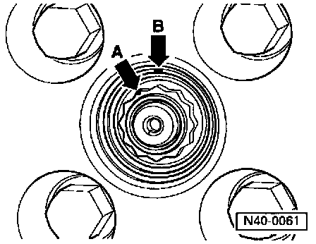

With Compressed Splines (Revised Version)
CAUTION: If the vehicle has to be moved after removing the drive axle, install an outer CV joint and tighten to 50 Nm (37 ft lb) to prevent damage to the wheel bearing.REMOVAL
1. Loosen 12 point hub nut while vehicle is on ground.
2. Raise vehicle until load on front wheel/axle has been relieved.
3. Remove drive axle from transmission drive flange.
4. Mark installed position of bolts.

5. Remove outer bolts (arrows -A-), and loosen inner bolt (arrow -B-).

6. Press drive axle out of wheel hub.
CAUTION: Ensure adequate space necessary to press axle shaft out.
7. Remove drive axle.
INSTALLATION
1. Remove residues of paint, grease and oil from splines of outer constant velocity joint.
2. Oil outer joint splines and threads.
3. Install drive axle.
4. Guide outer joint into wheel hub splines as far as possible.
5. Coat contact surface of 12-point nut with oil and thread on as far as possible.
6. Pull outer joint into wheel hub until outer joint is in position.
7. Connect ball joint to control arm and align using marks made during disassembly.
8. Connect inner CV joint to transmission drive flange, and torque to: 45 Nm (33 ft lb).
9. Tighten 12-point nut to 200 Nm (148 ft lb), then loosen one turn.
NOTE: The drive axle nut must be loosened or tightened only with the vehicle standing on its wheels.

10. Tighten 12-point nut to 50 Nm (37 ft lb) plus an additional 30°.
- Use angle measuring wrench, tool No. VAG 1756 or equivalent, if available

11. If an Angle Measuring Wrench is not Available:
- Lower vehicle until wheel touches the ground.
- Tighten 12-point nut to 200 Nm (148 ft lb) and then loosen 1 turn.
- Tighten 12-point nut to 50 Nm (37 ft lb).
- Mark one point with a line (arrow -A-).
- Make second mark (arrow -B-) on edge of wheel hub above next point.
NOTE: The distance from one point on the 12-point nut to the next point is 30°.
- Turn 12-point nut until both marks are aligned.